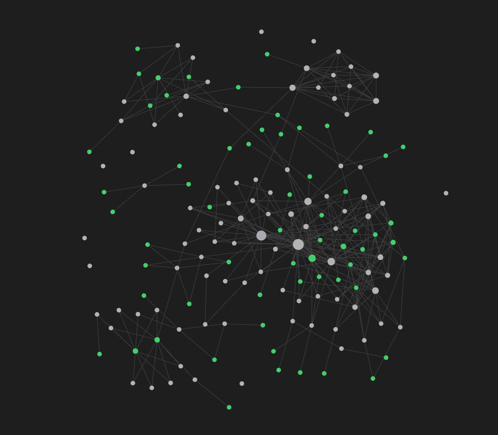

HADES ↗ en desarrollo
Plataforma de inteligencia artificial para empresas: múltiples agentes especializados trabajando bajo un orquestador central que reparte tareas, coordina contexto entre ellos y automatiza flujos de trabajo a nivel empresarial.
- Orquestador que enruta tareas al agente adecuado
- Agentes especializados por dominio (datos, documentos, soporte, operaciones)
- Memoria compartida y grafo de conocimiento entre agentes
- Automatización de flujos internos end-to-end